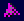

Finesse is an arcade puzzle game for the Atari ST which I wrote in 1991 but never released until now.
Finesse should run in any decent Atari ST emulator such as Steem running TOS v1.62. Download, unzip and run the disk image.
At the centre of the screen is a bat which you can rotate, surrounded by clusters of light bulbs.
Each bulb can be lit in one of seven different colours, or off.
A coloured ring around a bulb indicates its target colour:
In each cluster the bulb nearest the bat is the prime-bulb, encircled by dots:
The clusters are affected by small coloured pyramids which bounce around the screen: 
When a pyramid strikes a cluster:
if the prime-bulb is off, then the bulb lights up in the pyramid's colour.
if the prime-bulb is lit in the pyramid's colour, then the bulb turns off.
otherwise:
a) if the cluster contains a bulb of the pyramid's colour, then it rotates one place clockwise.
b) otherwise the pyramid changes colour to that of the prime-bulb
A level is complete when all the ringed bulbs are lit in their target colours. There are 100 levels to complete.
Press fire to start, then type a 4-digit passcode to enter a later level or press fire again to start at level 1.
At the start of each level you are given a number of finesses (moves). The countdown gives you a little time to think ahead before the first pyramid is injected.
The colours of one or more pyramids are shown just above the countdown after which the leftmost pyramid is injected first, followed by the others.
During play, a pyramid striking the arena's edge reduces the number of finesses by 1. When this reaches zero the game ends.
To help you progress, a 4-digit passcode is shown after every 5 levels.
| Control | Action |
|---|---|
| Joystick left/right | Rotate bat |
| Joystick fire | Speed up pyramids (for experts only!) |
| Spacebar | Restart level |
| P | Pause |
| ESC | Quit |
If you don't have a joystick, a good emulator should let you map your keyboard to joystick left/right and fire.
1 point for each finesse left in the level-intro countdown after fire is pressed.
5 points for each lit bulb at the end of a level.
Last update: Dec 2012
© 2012 dizzib